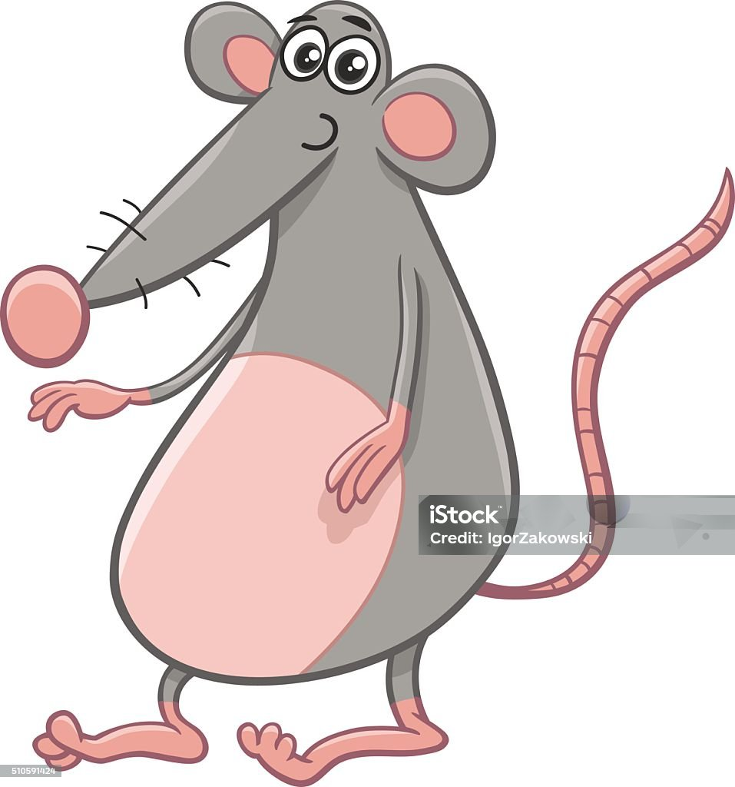

Objetivo
Aplicar as classes mais usadas em imagens no Bootstrap com arquivos da pasta img.
Dica: abra o modo responsivo do navegador para ver melhor o efeito da classe img-fluid.
Tarefa 1 - Imagem responsiva
Use a classe img-fluid para a imagem se ajustar ao tamanho da tela.

Tarefa 2 - Miniatura
Use a classe img-thumbnail para criar uma moldura de miniatura.
Tarefa 3 - Bordas arredondadas e circulo
Compare rounded e rounded-circle.
Tarefa 4 - Alinhamento horizontal
Aplique float-start, float-end e centralizacao com d-block mx-auto.
Desafio final
- Troque a imagem do desafio por rato_ratao_sports.jpg.
- Adicione img-fluid e rounded-4 nessa imagem.
- Centralize a imagem usando d-block mx-auto.